User Manual¶
iMOD6 3D viewer user manual¶
Contents¶
iMOD6 solutions and autosave file 3
Loading and unloading objects 5
How to visualize data on a grid 6
Moving objects in the treeview 7
How to change the active viewer 7
How to move an object from the 2d viewer to the 3d viewer and vice versa 8
How to change the vertical exaggeration 13
How to change the representation of a grid 14
Changing the legend of a ugrid dataset, IDF or fence diagram grid. 15
Additional representation options for IDF files 22
How to inspect dataset values of a cell 23
Introduction¶
The iMOD6 3d Viewer is a viewer for grids and datasets. In this manual we consider a grid to be a region of space that is subdivided into cells. A grid input file contains the geometry of these cells, often as a list of vertex coordinates and cell-vertex connections.
A dataset is a list of values associated to the cells or vertices of a grid. A dataset can contain for example a porosity or hydraulic head for every cell in the grid. A dataset can have an associated time. In an input file, a dataset is usually just a list of values where value number N is associated to cell number N in the grid.
The iMOD6 3d Viewer is used for viewing the grids in 3d, and for plotting datasets on top of the grids using a color legend. To gain more insight in the data, the color legend can be edited, and the values of individual cells can be inspected. Slider tools allow viewing the inside of 3d bodies.
Relationship with QGIS¶
The iMOD6 3d Viewer can be used as a standalone or in combination with the Deltares iMOD6 QGIS plugin. From this plugin, the viewer can be launched, and grids can be loaded into it. Using the QGIS plugin is currently the only way to create fence diagrams in the viewer. Also, the QGIS plugin allows for specifying a bounding box for ugrid files. When this option is used, the viewer only loads the part of the grid in an ugrid file that is inside the bounding box.
Features¶
The iMOD6 3d Viewer supports visualizing grids in the following file formats:
IDF files. Both equidistant and non-equidistant ugrids are supported.
Ugrid files. iMOD6 can read ugrids that contain exclusively 2d elements such as triangles, quadrilaterals and other polygons. 1d and 3d elements are not supported. In some cases, a layered grid can be encoded as a 2d grid with certain properties. See the Layered Ugrid chapter for more detail.
Grb.disu files. These files are written by modflow and contain an unstructured layered grid used in a modflow simulation. Only the grid can be loaded; datasets cannot be loaded (yet)
The iMOD6 3d Viewer also supports viewing some non-grid objects.
IPF files. These files contain tables of numeric and text data, separated by commas and whitespace, and with a small file header containing the column names. IPF files can be rendered as a collection of points (the user chooses which columns to use for x, y, and z coordinates) or vertical cylinders (the user chooses which columns to use for x, y, top and bottom). The intended use of this is to visualize for example borehole locations, observations wells, production wells or well filters.
Shapefiles. These can be used to add geographical context, by adding rivers or province boundaries to the view. Only vector-type shapefiles can be show, and only the linestrings, polygons and multipolygons in it are imported.
The iMOD6 viewer can show fence diagrams. This only works when used in combination with the Deltares QGIS plugin
General Workings¶
iMOD6 solutions and autosave file¶
{kind=link}
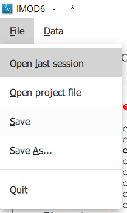
Figure 1: file menu options for saving and loading projects.
The list of open files, along with the chosen legends and IPF column mappings, can be saved into an iMOD6 solution file. To do this, open the file menu and choose “save” or “save as”.
The resulting file can be opened with the “open project file” option.
An autosave file is automatically created or updated when opening a grid, overlay or IPF file, or when editing a legend or an IPF column mapping. This autosave file therefore reflects the state of the viewer more or less recently and is stored in the appdata directory (most likely this:
C:UsersyournameAppDataRoamingIMOD6)
{kind=link}
Loading and unloading objects¶
Objects can be added to the explorer
Through the QGIS plugin ( see the manual of that)
By opening the “data”menu and selecting “open grid” (for ugrid, ipf,or grb.disu files); “open overlay” ( for shapefiles) ; or “open point data” (for ipf files)
When the second method is used, then the objects appear in the sidebar
but not in the viewer. They have to be loaded into the viewer in a
second step. To do that, select the objects you want to see in the
sidebar and click the “draw selected layers” button. ( ) (Figure
3).
) (Figure
3).
{kind=link}
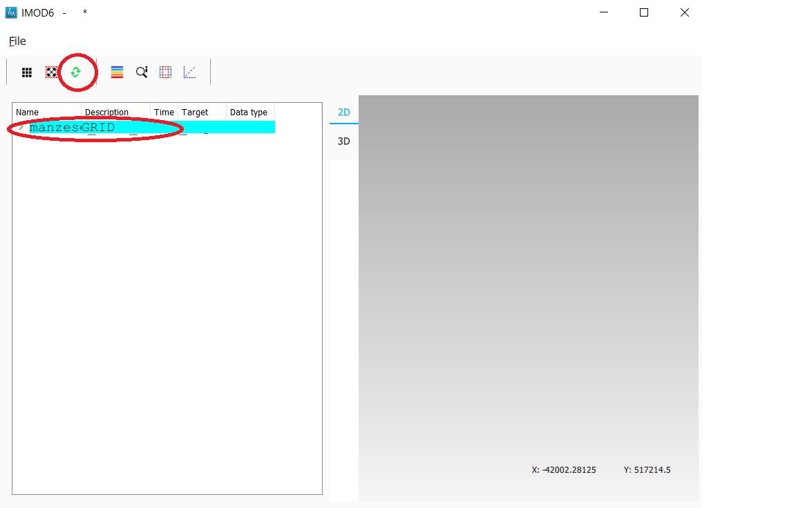
Figure 3: In order to visualize a grid in the viewer, select the grid and then press the green button.
When an object is visualized in the viewer, its name appears in boldface in the explorer.
When the “draw selected layers” button () is pressed, all object
that are not selected are unloaded from the viewer and are no longer
bold, except if they are locked.
How to visualize data on a grid¶
In order to visualize a dataset on a grid, first visualize the grid itself. Then double-click on one of the datasets in the explorer.
Once visualized, the dataset will appear in boldface in the explorer (Figure 4).
{kind=link}
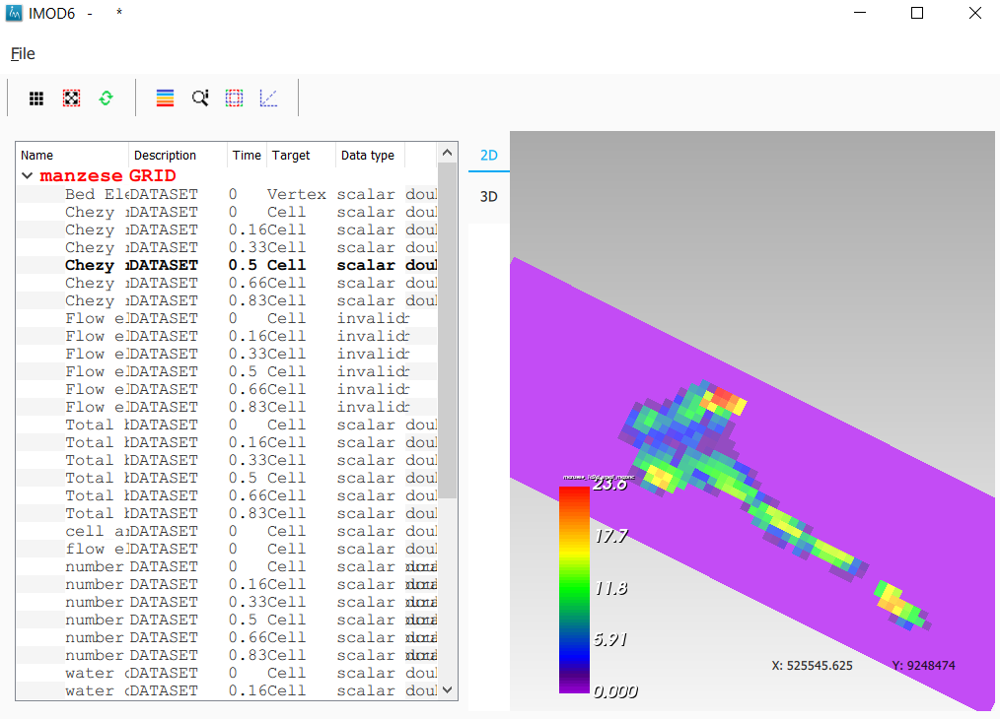
Figure 4: the dataset that is visualized is marked in bold in the explorer.
Currently, only datasets that hold scalar values associated to cells can be shown.
Locking mechanism¶
Top level nodes can be “locked” and grid layer nodes can be
When a node is “locked”, the object it represents is no longer
automatically unloaded when the “draw selected layers” () is
pressed. It can still be moved or deleted through the context menu.
To lock a node, select it and press “L” (lowercase or uppercase) on the keyboard. A padlock icon now appears next to it (Figure 5).
To unlock it, press “O” (lowercase or uppercase) on the keyboard. Now an open padlock icon appears.
{kind=link}
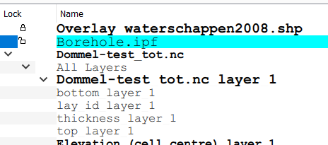
Figure 5 The padlock icon shows if a node is locked or unlocked
Moving objects in the treeview¶
Top level nodes can be moved up and down the treeview, allowing you to order the objects as you see fit.
To move an item in the treeview, select it with the mouse and then press u (up) or d (down) to move the object.
How to change the active viewer¶
iMOD6 contains a 2d viewer and a 3d viewer. In the 2d viewer, all grid data is projected on the horizontal plane. The camera always points straight down. The camera can be moved and it can be rotated around the z axis but it always keeps pointing straight down. The 2d viewer provides a sort of map-view of a grid.
In the 3d viewer, the grid is rendered in 3d space. The camera position not fixed: it can be rotated around any axis and it can be translated.
One can swap between the 2d viewer and the 3d viewer by pressing the
“2D” and “3D“ tab buttons as indicated in Figure 6. 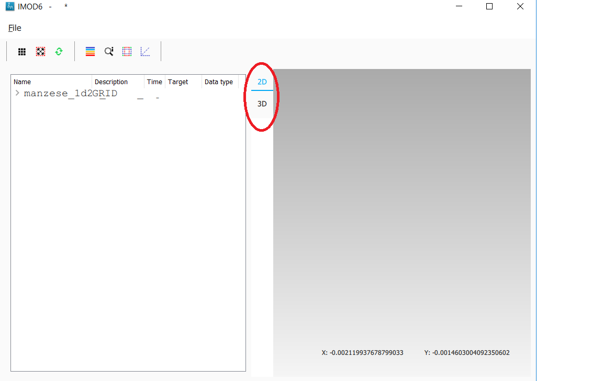
{kind=link}
Figure 6: use the tab buttons to activate the 2d or 3d viewers
How to delete an object¶
To delete an object (grid, overlay or IPF cylinders) , right click on it in the explorer. Now a context menu appears. Choose the option “delete” to have the grid removed from the explorer. If you want to stop visualization of the grid without removing it from the explorer, use the redraw button instead. In the explorer, select the grids you want to be visualized, and make sure the grids you want to be unloaded are unselected. Then press redraw.
How to move an object from the 2d viewer to the 3d viewer and vice versa¶
An object can be moved to the viewer it is not on. Right click on it in the explorer. Now a context menu appears. Click on “move to other viewer” to move the grid to the other viewer. The object is automatically removed from the original viewer.
Using the time-slider¶
Some datasets vary through time. iMOD6 currently supports 2 cases:
the dataset does not have a time associated. In this case it is called “invariant” in the UI
the dataset has one or more sets of values, each one with a specific point in time associated ( so not an interval!). This time must be an actual date-time; we don’t support dimensionless time or unreferenced time.
{kind=link}
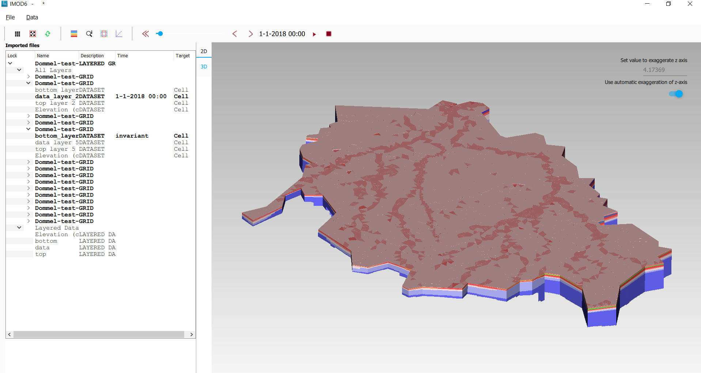
Figure 7: Tools and texts related to time in the UI
Figure 7 shows the location of tools and texts in the UI that help the user orientate in and step through the time dimension of datasets. First note , displayed in the toolbar. This is the “viewer time”. This is the time the viewer is currently trying to display. Since the time discretization can be different per dataset and we can show different datasets and grids simultaneously, it is not guaranteed that all datasets currently in the viewer can be shown for this specific time! Hence, in the sidebar it is shown at what time the datasets are actually diplayed ( , ).
The viewer time can be selected using the slider (). It varies over the temporal range of all displayed datasets combined- this means that when you display another dataset, the range of the slider could change. The scaling of the slider is based on the time indexes, not on the time value itself. This means that if you have dataset values for 3 times, the slider will be divided in 2 equally sized intervals- and you would be able to select the beginning, halfway and the end of the slider, regardless of how much actual time there is between these 3 times.
When there are many times available, the resolution of the slider becomes very fine and it can then be more convenient to use the “next time”and “previous time” buttons (), which increment and decrement the slider one position. There is also a “rewind” button to move the slider to its lowest value( )
Finally, it is possible to animate plots using a “play” button (). This moves the slider one step forward per second, or slower if updating the plot takes longer. The animation can be stopped using the “stop” button ().
The decision on what time to display for each dataset is taken as follows (see Figure 8):
Figure 8 Times displayed for different dataset for a given viewer time (the vertical line). The blue dots indicate the times at which a dataset has values. The red dots indicate the values displayed.
invariant datasets are shown regardless of the viewer time’
if a dataset has a value at the viewer time this value is shown
if it has no value at the viewer time but it has a value earlier than the viewer time then this value is shown
if it has no value at the viewer time and no value earlier than the viewer time then the first time after the viewer time is shown.
Property windows¶
By right-clicking on grids or datasets in the explorer, a context menu appears. In it, there is usually a “properties” option which opens a form displaying some of the properties of the object- and sometimes it allows setting some properties as well. Here are a few examples:

Figure 9: property windows, from left to right for a grid, a layered grid and a dataset
How to use the viewers¶
In both the 2d viewer and the 3d viewer the following controls work if the mouse pointer is in the viewer area:
Spinning the mouse wheel forward: zooms in
Spinning the mouse wheel backward: zooms out
Hold shift key, while pressing the right mouse key, and move the mouse: moves the camera horizontally, corresponding to the mouse movement
Hold ctrl key, while pressing the right mouse key, and move the mouse: this rotates the camera around its lens.
Clicking on a grid: this selects or unselects the grid. When a grid is selected, its name appears in red in the explorer. Only one grid can be selected at any time. A grid must be selected in order to change its legend, or to inspect its cells values.
Pressing the “zoom to extent” button (  ) in the
toolbar: zooms out until all the grids that are visualized in the
current viewer fit on the screen.
) in the
toolbar: zooms out until all the grids that are visualized in the
current viewer fit on the screen.
In the 3d viewer the following also works:
Hold the right mouse button while moving the mouse: this moves the camera in a trajectory around the grid. The direction and length of the mouse movement determine the amount of camera movement.
{kind=link}
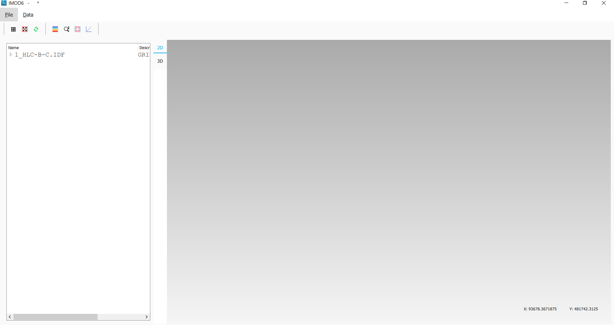
Figure 10: after opening a file the grids in the file appear in the explorer bar
How to use clipping¶
The clipping functionality allows one to “cut off” slices of one or more grids in the 3d viewer. The internals of the grids are then exposed, allowing us to see the value of datasets or the grid geometry inside.
{kind=link}
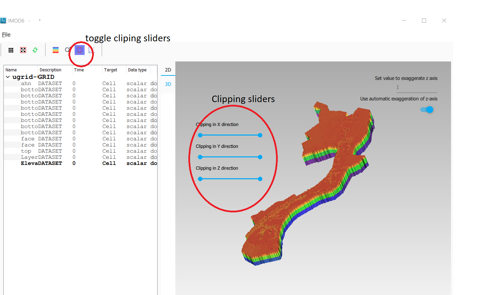
Figure 11: activate clipping mode by pressing the clipping button in the toolbar. Sliders appear in the 3d viewer.
Now use the sliders to clip the model. Each slider represents the combined range of all the grids in the viewer in one direction.
{kind=link}
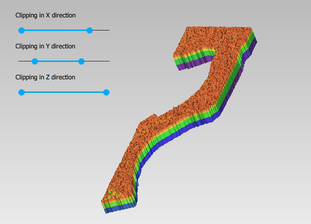
Figure 12: use sliders to cut model in each direction
How to plot gridlines¶
In the 2d viewer, it is possible to plot geographical gridlines on top of a grid (Figure 13). In the 3d viewer this feature only works well at near-vertical viewing angles.
{kind=link}
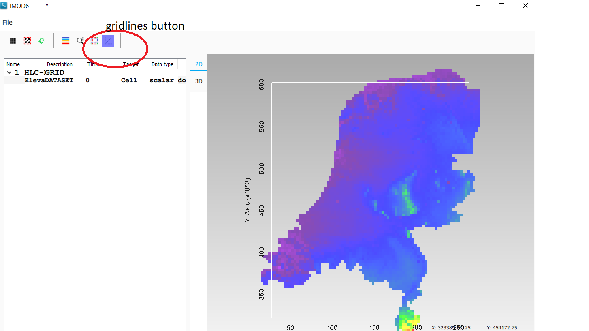
Figure 13: toggle gridlines with the gridlines button
How to change the vertical exaggeration¶
In the 3d viewer, objects can appear to be flat when they are not, because the range in the x and y directions for geological structures is often much larger than the range in the z direction. For example, geological layers may extend for tens or hundreds of kilometers horizontally but have a thickness and height variation of tens of meters.
To fix this issue, vertical exaggeration can be applied. This is only needed in the 3d viewer, as vertical variation is not shown in the 2d viewer. The same vertical exaggeration is applied to all the visible grids.
By default, a vertical exaggeration is computed from the grid geometry. It computes a vertical exaggeration such that the vertical variation becomes at least 10% of the horizontal variation.
The exaggeration factor can also be set manually. To do so, disable the “Use automatic exaggeration of z-axis”slider and enter the desired value in the text field above it.(Figure 14)
{kind=link}
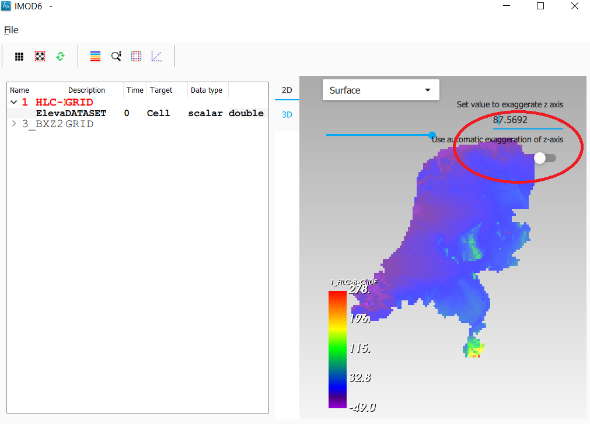
Figure 14: vertical exaggeration slider and text field
How to change the representation of a grid¶
In the 3d viewer, grids can be visualized as solid bodies(Figure 15); as wireframes and as point clouds. In wireframe mode, only the edges of the cells are drawn, allowing one to look inside the grid. In point cloud mode, only points corresponding to the cell centers are shown
To change the representation, select one grid in the 3d viewer. Once selected, a dropdown appears where the representation can be changed. All visible grids get the selected representation.
{kind=link}
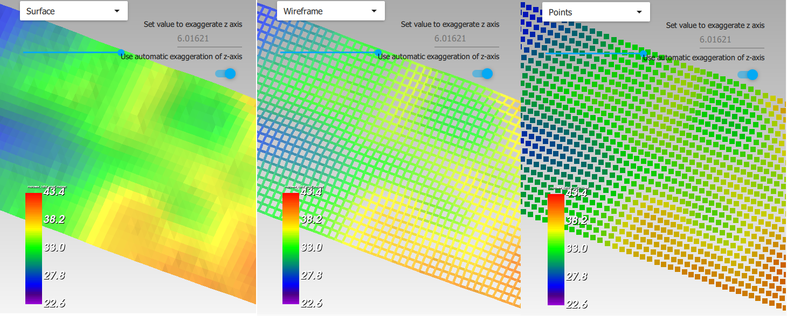
Figure 15: The 3 representations of a grid
Changing the legend of a ugrid dataset, IDF or fence diagram grid.¶
To edit the legend of a dataset in an ugrid file, IDF file or fence diagram, it is necessary to load the legend editor form. From there, the legend can be customized.
The way to make the legend editor appear, depends on the object.
For an IDF file, or a single layer of a layered ugrid file, or a non-layered ugrid file, do the following:
-if not done yet, double click on the dataset to make it appear in the viewer
-open the context menu of the IDF file or grid layer
-press “select in viewer”
-press the edit legend button ( ) .
) .
For a layered ugid dataset ( so applying on all layers at the same time)
-right click on the data set you want to apply the legend to
-from the context menu, select “edit legend”
The legend editor¶
The legend editor consists of 2 tabs: one for continuous legends and one for discrete ones
Figure 16 .
This form is more or less self explanatory. You can choose a color scale (currently rainbow or blue-white-red). Note that it is possible to save a legend in a separate file, or to load a legend from such a file, with the “save” and “load” buttons.
{kind=link}
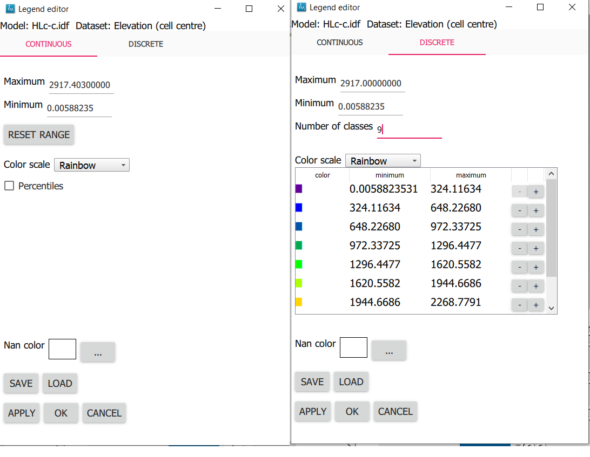
Figure 16: the 2 tabs of the legend editor
When using a percentile legend, colors are assigned to a cell based on the percentage of cells that hold a value lower than that of the current cell. The color map is distorted to reflect this. For example, when using the “heat map” legend, the lowest value is blue, the highest red, and the middle of the range is white. When using a heat map with percentiles, the white color represents not the middle of the range, but the value for which 50% of other values is smaller than itself (Figure 17).

Figure 17: heat map legend with percentiles on and off. Without percentiles(left), the white color is the middle of the legend range. With percentiles on (right),the color map is distorted and white is now the median value of the dataset. In general, a color that represents n% of the range in the linear legend, is mapped to the value that is larger than n% of the data in the percentiles legend.
Note that the percentile calculation does not take cell size into account.
Working with fence diagrams
Fence diagrams have the same user interface as layered ugrid files. They have the same layers as the original layered ugrid they cut through, and the same datasets. Their legend can be set per-layer or for the whole fence diagram in the same way as we do for layered ugrids.
Working with IPF files¶
To visualize an IPF file, open the data menu and click on “open overlay
file”. An open file dialog appears. Select an IPF file. As with grids,
the filename is then displayed in the explorer bar, but the IPF file is
not yet rendered. To render it, select the IPF’s row in the explorer bar
and hit the button.
On import, iMOD6 will attempt to draw a vertical cylinder for each row in the IPF file’s data block (so excluding the header).
By default, a column called “x”or “X” and “y” or “Y” are used for the center of the cylinder’s top and bottom; and “top”or “TOP” and “bot”or “BOT” are used for the z-coordinates of the cylinders top and bottom, respectively.
If these columns are not present or if they contain text data, then the first 3 numerical columns are used for x, y and z, and the IPF data is plotted as points on these locations(Figure 18).

Figure 18: when the default column names are not found an error message appears.
To adjust the column mapping, right click on the IPF’s row in the explorer bar and select the “Properties” menu option. Then a window appears where the column mapping can be updated(Figure 19).

Figure 19: property window allows to choose what IPF columns to use for drawing cylinders.
The z0 and z1 comboboxes will be used for the cylinder’s top and bottoms respectively. If the z1 column is not set, then points will be generated instead of cylinders.
The “Label column” combobox allows choosing a combobox to be used for labels. If not set, then no labels are shown. Otherwise the content of the selected column will be shown as a text label near the top of the column.
The IPF column mapping is serialized into solution and autosave files, and the next time a solution is loaded, the last-used column mapping will be assigned to each IPF file.

Figure 20: image of an IDF plot with labels in the 2d viewer
As with overlays, the color and cylinder thickness can be adjusted from the context menu of the IPF file.
Plotting borehole data¶
When the IPF file contains references to additional datafiles, one for each row in the IPF file, and when these datafiles contain 1d borehole data, then this data can be plotted on the cylinders.
To do that, check the option “Plot data on cylinder” on the IPF property form (Figure 21) . Both real number data and string data can be plotted. When the checkbox is checked, a legend the appears on the form proposing a color mapping. This legend is either a continuous scale (for real numbers) or a string-to-color mapping like in the example in Figure 21. The colors can be changed by clicking on a particular color box.
These legends can be saved and loaded as well.

Figure 21: 1d borehole data can be plotted on cylinders generated from the ipf file. Both real number data and string data can be plotted. In this example, string data was present in the “Admixture” column
Working with IDF files¶
IDF file resolution¶
An IDF files contains a 2d structured grid, and 1 dataset with cell data. This dataset is treated for visualization purposes as if it were elevation, but it can be anything. The resolution is sometimes so high it makes the grid slow to load. Therefore, an automatic upscaling is applied when visualizing the grid, reducing the number of cells to approximately 100*100. Each upscaled cell contains an integer number of actual cells in both the x and y directions; therefore cell boundaries in the upscaled grid are guaranteed to coincide with cell boundaries in the actual grid.
The “elevation“ value of each upscaled cell is taken from the actual cell that contains the upscaled cell’s center.
To increase the resolution of the IDF grid in the viewer, zoom in with
the mouse wheel to the area where additional detail is required. Then
press the redraw button(  ).
).
This renders the area visible in the viewer in higher resolution, but
removes the invisible parts of the grid(Figure 22). To restore those,
zoom out again and press again.

Figure 22:Left, an upscaled IDF file. Middle: after zooming in on an area of interest. Right: after pressing the redraw button to increase resolution.
Another way to change the resolution of an IDF file is to select the IDF’s row in the explorer bar and clicking on “resolution” (Figure 23). This allows choosing a resolution of 100x100, 250x250 or 500x500 for the IPF file (Figure 24).
{kind=link}
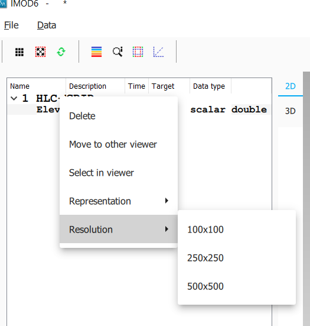
Figure 23: choose the resolution of the IDF file

Figure 24: IDF file at resolution 100x100 (left); 250*250(middle) and 500x500 (right)
Additional representation options for IDF files¶
The options outlined above change the way each cell is rendered, but they do not change the underlying geometry of the cells. For IDF files we have an additional option. IDF cells are horizontal rectangles, and a surface formed by an IDF grid may look strange in the 3d viewer because these rectangles “float” at different elevations(Figure 26 ). Therefore, an additional option of rendering an IDF grid as triangles was added. The corner points of the triangle are the cell-centers of the rectangles, and have the elevation of that rectangle.
{kind=link}
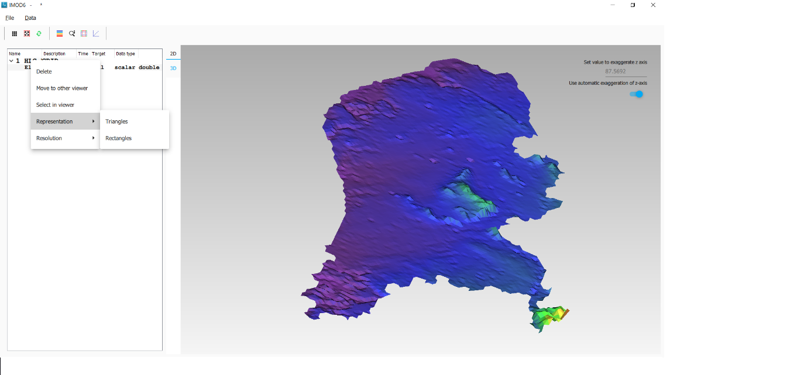
Figure 25: context menu for changing representation of an IDF file

Figure 26: an idf file rendered as rectangles (left) and triangles (right)
To change the representation of an IDF file, load the ipf file and then right-click on its entry in the explorer bar. A context menu appears (Figure 25). Choose rectangles or triangles as desired.
Working with shapefiles¶
To visualize an overlay, open the data menu and click on “open overlay
file”. An open file dialog appears. Select a shapefile containing vector
data. As with grids, the filename is then displayed in the explorer bar,
but the overlay is not yet rendered. To render it, select the overlay’s
row in the explorer bar and hit the button.
Once loaded, the line thickness and color of the overlay can be changed by right clicking on the overlay’s row in the explorer bar. This makes a context menu appear(Figure 27). There is a menu option for changing the color and one for changing the line thickness.
{kind=link}
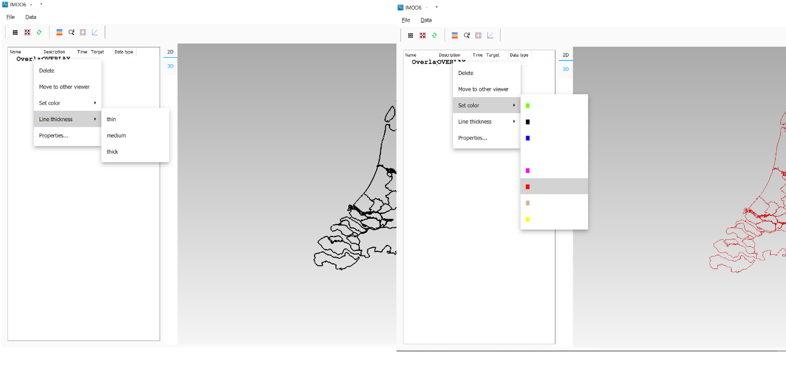
Figure 27: context menu options for changing the color and line thickness of an overlay.
How to inspect dataset values of a cell¶
When we visualize a dataset, its values are used to assign a color to each cell; the value to cell mapping is defined by the legend. Hence, inspecting the plot of a dataset gives a rough idea of the value of that dataset in each cell.
To get a more precise value, it is possible to click on a cell and get a list of the values of different datasets in that cell. Take the following steps to do this (Figure 28):
Visualize a grid in the viewer and select it.
Press the “identify” button in the toolbar.
Select some datasets of the selected grid in the explorer
Click on a cell of the grid. It will be highlighted in black.
Now a window opens showing the values of the selected datasets in the selected cell.
To end identifying, press the “identify” button again.
{kind=link}
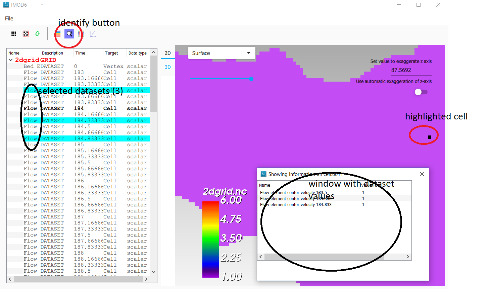
Figure 28: dataset values can be inspected with the identify button
Layered Ugrids¶
iMOD6 currently supports only 2d ugrid files. However, when iMOD6 recognizes that datasets called “layer_1_top” and “layer_1_bot” are present (1 being a layer number), it will create a 3d grid using the x and y coordinates from the 2d grid, and the top and bottoms from the datasets. The result is a grid with cells that have horizontal and vertical cell faces, and that can represent for example a geological layer. Additional datasets ( layer_2_top and layer_2_bot) can be provided to create additional layers. The grids created this way will all have the same x and y positions for their nodes, but due to the top and bot datasets, they are at different depths. There can be holes between the layers to represent for example aquicludes.
Each layer is shown in the explorer as a separate grid that can be loaded and unloaded independently. Properties can be assigned to each layer by listing the layer number in the dataset name. For example, we can assign a kD property to each layer by creating datasets called “kD_layer_1”, “kD_layer_2”, etcetera.
An example to convert a layered subsurface model in *.idf to a ugrid file can be found on https://gitlab.com/deltares/imod/imod-python/-/snippets/2104179
{kind=link}
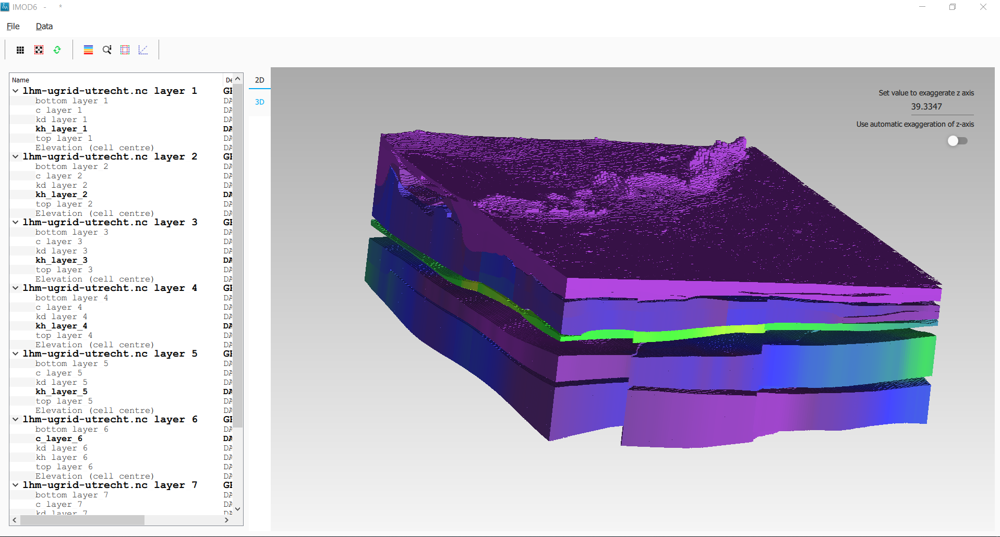
Figure 29: a 2d ugrid file rendered as a layered 3d grid

Figure 30: view on internals of ugrid that can be used for rendering as a 3d layered grid